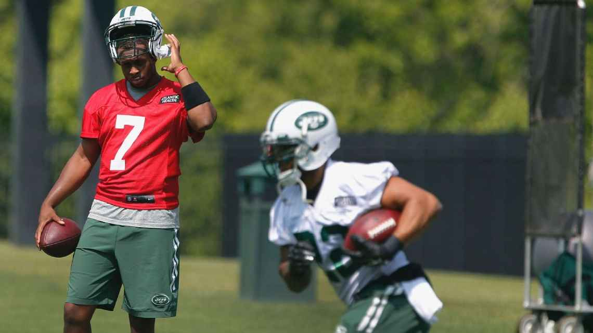

FLORHAM PARK, N.J. -- Matt Forte still isn't practicing for the The New York Jets, but he gave fans a reason to be excited nonetheless.
When asked Tuesday if he thinks he could miss the team's regular-season opener against the Cincinnati Bengals on Sept. 11, Forte said, "Nah, I'll be available. Definitely."
Forte, whom the Jets signed as a free agent back in March, has missed the team's training camp practices thus far due to a hamstring injury. But he did participate in individual drills Tuesday, taking handoffs and catching short throws from quarterback Ryan Fitzpatrick.
"When he's back, he's back," Jets coach Todd Bowles said of Forte. "I don't have a timetable for him. We understand the process we're taking with him, and we're fine with it."
Forte said he has had no setbacks with the hamstring injury.
"It's taken longer than I expected, just because we're being super, super cautious about it," he said. "At this point there's no reason to really rush back out there. I got a lot of reps in the offseason, I know the offense, and by watching in camp and stuff I know a lot more. It won't take that long to get back into it."
The Jets almost certainly won't play Forte in their second preseason game, against the Washington Redskins, on Friday night. The bigger question is whether he'll play in the team's third preseason game, when starters typically see the most action.
Forte sounded anxious to get back on the field.
"This is the most patience I've had to have with an injury," he said. "They've had to hold me back personally because if not, if it were up to me, I'd be going at it every day to try to be out there on my own terms."
Bowles is taking a wait-and-see approach.
"If we can have him back in time enough to get some reps in before the first game, then we'll work from there," he said.
The Jets have high hopes for the two-time Pro Bowler, who played eight seasons with the Chicago Bears and leads the NFL in all-purpose yards (12,718) since entering the league in 2008.
Further down the depth chart, the Jets placed running back Bernard Pierce (hamstring) on injured reserve Tuesday, and signed running back Antone Smith.
Click to Share this article on Facebook Click to Share this article on Twitter Click to Share this article on Pinterest
Comments